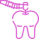

Exames Dentários e Diagnóstico
Exames Visuais: Nossos dentistas examinam cuidadosamente os dentes e as gengivas de seu filho em busca de sinais de cáries, gengivite ou outras condições bucais.
Radiografias Dentárias: Quando necessário, realizamos radiografias dentárias de baixa exposição para obter informações mais detalhadas sobre a saúde dos dentes e das estruturas orais.
Avaliação da Mordida: Verificamos o alinhamento dos dentes e a mordida da criança para identificar qualquer problema de oclusão ou necessidade de tratamento ortodôntico.

Tratamentos Restaurativos
Proteção Preventiva: Aplicamos selantes seguros e indolores nas superfícies dos dentes molares permanentes para evitar a acumulação de resíduos de alimentos e a formação de cáries.
Monitoramento Contínuo: Acompanhamos o desenvolvimento da dentição do seu filho e garantimos que os selantes estejam sempre em boas condições.
Resposta Rápida: Estamos prontos para atender às emergências odontológicas do seu filho, como traumas dentários, dores intensas ou outros problemas urgentes.
Tratamento Compassivo: Nosso objetivo é aliviar o desconforto e a preocupação do seu filho com o máximo de cuidado e compaixão.
Educação e Aconselhamento
Higiene Bucal: Ensinar técnicas adequadas de escovação e uso de fio dental, garantindo que seu filho compreenda a importância de manter os dentes e gengivas limpos.
Dieta Saudável: Explicar a influência da dieta na saúde bucal e recomendar escolhas alimentares que promovam dentes fortes e saudáveis.
Hábitos Bucal Saudáveis: Oferecer orientações sobre como evitar hábitos prejudiciais, como chupar o polegar ou usar chupetas por muito tempo.
Selantes Dentários: Explicar a importância dos selantes dentários na prevenção de cáries e aplicar selantes quando necessário.
Experiência Positiva: Trabalhamos para tornar cada visita ao dentista uma experiência positiva, ajudando a criar uma associação feliz com o cuidado bucal.